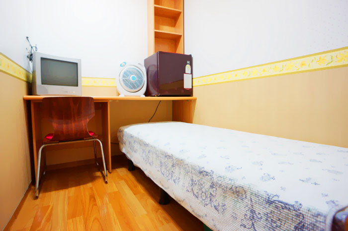

Noryangjin – The Limbo where the Koreans youth’s dreams of safety through bureaucratic conscription go to die.
"Me and my friends call our country 'Hell Joseon', It means that there is no hope that you can live well even if you try hard." says Kim, 30. The 'Joseon' was the dynasty ruling Korean Peninsula for over 600 year, until Japanese occupation in 1910. The word 'hell' stands for South Korean young people's frustration and anger about the society where they can hardly find hope for the future. The word 'Hell Joseon' became a symbol of competitive and harsh society of South Korea, especially for young people.
Kim is living Noryangjin, located in the southern part of the Han River in Seoul. The district typifies the experiences of young South Korean professionals fiercely competing for stable jobs. Noryangjin is home to hundreds of private academies and institutions for young people who are undertaking the South Korean civil service entry examinations. Youths from all over the country flock to Noryangjin which serves as a transitory hub for those that move here to study and try to pass the exam. Some end up staying for many years as so many youngsters flock to take these civil service exams, with a fraction of places available.
Kim is one of these stuck in limbo having failed his last two yearly examination attempts. Kim is dependent on his parents as he desperately studies the exam to be a public officer of the Seoul Metropolitan Government. Kim sighs before saying "All I can do here is just studying, eating, and sleeping. I had to give up my personal relationship with friends, and even with relatives and family because competition is so intense that there is no guarantee that I will pass the exam someday." According to the announcement of the Seoul Metropolitan Government, the average hiring ratio public officers test in 2019 was 53:1, with 19,347 applicants for a mere 363 places. Kim was part of the vast majority of people who were not selected this year.
"Becoming a public officer is my old dream because I saw my father as a banker laid off from his company when I was young. I want a stable job where I can work until retirement without worrying about laid off. But I don't know how much longer I can stand in this narrow room." Kim worries. His 'Gosiwon' (room in Korean), is tiny. Kim can take a maximum five steps from the door to reach the window at the far end of his room. He can’t even fit his closet here. It was, however, the only option that he can choose with his budget. This story is all to common amongst young people who want to be public officers end up living in a very poor residential environment like Kim. Most of those end up spending between one to three years in Noryangjin taking classes related to the exams, there is a high price both fiscally, and mentally.
According to the Korea Research Institute for Human Settlements, many young people living in Noryanjin had poor quality housing, which did not meet adequate standards. The institute defines 'adequate living standards' as an abode includes at least one room with kitchen and a private entrance to the property. However 'Gosiwon' where most of the young people in Noryanjin is living is usually just over 3 square meters often with no kitchen or even a window.
The KRIHS also found that of the 130,000 households are living in 'Gosiwon' 75% of them (98,000) are youngsters. In Noryangjin, many of 'Gosiwon' even form mini-towns. Kang Mina, senior researcher of KRIHS stressed that, despite a rise in wages, not enough was being done about the problem. "Although South Korea entered the era of income of USD 30,000, young people are still in the blind spot of housing welfare." This is compounded by the vulnerable housing environment of youth which in turn is likely to lead to increased instances of youth poverty due to the unemployment issues. "As young people need more time to get hired, the share of residential costs in disposable income is increasing. Unemployment and housing insecurity are the biggest threats to youth now." Kang said.